1 Η συνάρτηση f(x) = αημx + βσυνx
1.1 Η Συνάρτηση \(f(x) = ρημ x \quad (ρ > 0)\)
Σε προηγούμενες ενότητες μελετήσαμε τη βασική συνάρτηση \(g(x) = ημ x\) καθώς και τη μορφή \(f(x) = ρημ x\) με \(ρ > 0\). Τα κύρια χαρακτηριστικά της είναι:
Πεδίο Ορισμού: Το σύνολο των πραγματικών αριθμών \(A = \mathbb{R}\).
Σύνολο Τιμών: Το κλειστό διάστημα \([-ρ, ρ]\).
Ακρότατα:
Μέγιστη τιμή: \(M = ρ\), η οποία λαμβάνεται στις θέσεις \(x = 2k\pi + \dfrac{\pi}{2}, \quad k \in \mathbb{Z}\).
Ελάχιστη τιμή: \(m = -ρ\), η οποία λαμβάνεται στις θέσεις \(x = 2k\pi - \dfrac{\pi}{2}, \quad k \in \mathbb{Z}\).
Περίοδος: Είναι περιοδική συνάρτηση με βασική (πρωτεύουσα) περίοδο \(T = 2\pi\).
Μονοτονία (στο διάστημα \([0, 2\pi]\)):
Γνησίως αύξουσα στα διαστήματα \(\left[0, \dfrac{\pi}{2}\right]\) και \(\left[\dfrac{3\pi}{2}, 2\pi\right]\).
Γνησίως φθίνουσα στο διάστημα \(\left[\dfrac{\pi}{2}, \dfrac{3\pi}{2}\right]\).
Συμμετρία: Είναι περιττή συνάρτηση, καθώς για κάθε \(x \in \mathbb{R}\) ισχύει \(f(-x) = ρημ(-x) = -ρημ x = -f(x)\).
Συνεπώς, η γραφική της παράσταση έχει κέντρο συμμετρίας την αρχή των αξόνων \(O(0,0)\).
- Γραφική Παράσταση: Προκύπτει από την ημιτονοειδή καμπύλη \(y = ημ x\) με κατακόρυφη διαστολή (αν \(ρ > 1\)) ή συστολή (αν \(0 < ρ < 1\)) κατά συντελεστή \(ρ\), η οποία ορίζει το πλάτος της ταλάντωσης.
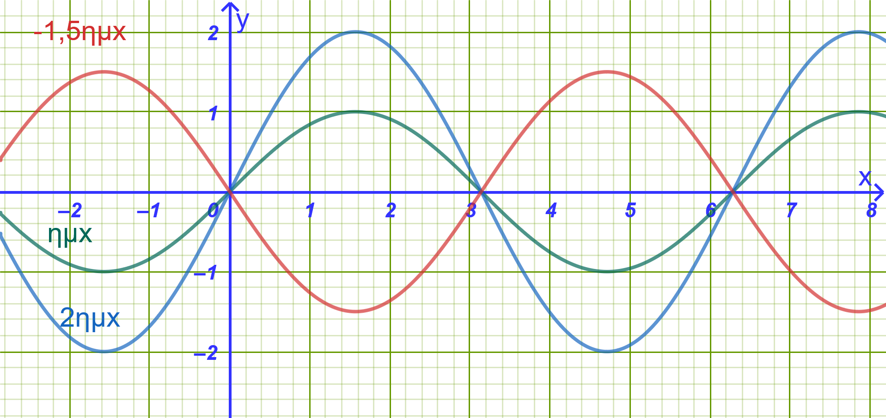
1.2 Η Συνάρτηση \(f(x) = ρημ(x + \phi)\)
1.2.1 Μελέτη μέσω του παραδείγματος \(f(x) = 3ημ\left(x + \dfrac{\pi}{3}\right)\)
\(f(x) = 3ημ\left(x + \dfrac{\pi}{3}\right)\)
- Σχέση με τη συνάρτηση \(g(x) = 3ημ x\):
Παρατηρούμε ότι ο τύπος της \(f(x)\) προκύπτει από τον τύπο της \(g(x) = 3ημ x\), αν αντικαταστήσουμε τη μεταβλητή \(x\) με το \(x + \dfrac{\pi}{3}\), δηλαδή \(f(x) = g\left(x + \dfrac{\pi}{3}\right)\).
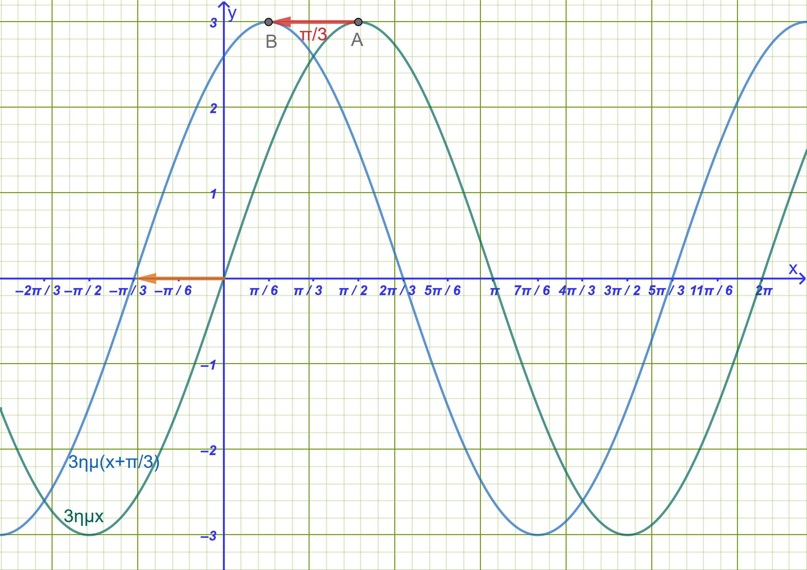
- Γεωμετρική Ερμηνεία & Διαφορά Φάσεως:
Η γραφική παράσταση της \(f(x)\) προκύπτει από μια οριζόντια μετατόπιση της γραφικής παράστασης της \(g(x) = 3ημ x\) κατά \(\dfrac{\pi}{3}\) μονάδες προς τα αριστερά.
Ο σταθερός αριθμός \(\phi = \dfrac{\pi}{3}\) ονομάζεται διαφορά φάσεως.
Γενικά, για τη συνάρτηση \(f(x) = ρημ(x + \phi)\):
Αν \(\phi > 0\), η καμπύλη \(y = ρημ x\) μετατοπίζεται αριστερά κατά \(\phi\) μονάδες.
Αν \(\phi < 0\), μετατοπίζεται δεξιά κατά \(|\phi|\) μονάδες.
- Βασικά Χαρακτηριστικά της \(f(x) = 3ημ\left(x + \dfrac{\pi}{3}\right)\):
Πεδίο ορισμού: \(A = \mathbb{R}\).
Πλάτος & Ακρότατα: Το πλάτος είναι \(ρ = 3\). Επειδή \(-1 \le ημ\left(x + \dfrac{\pi}{3}\right) \le 1\), το σύνολο τιμών είναι το \([-3, 3]\).
Μέγιστη τιμή: \(M = 3\), για \(x + \dfrac{\pi}{3} = 2k\pi + \dfrac{\pi}{2} \iff x = 2k\pi + \dfrac{\pi}{6}, \quad k \in \mathbb{Z}\).
Ελάχιστη τιμή: \(m = -3\), για \(x + \dfrac{\pi}{3} = 2k\pi - \dfrac{\pi}{2} \iff x = 2k\pi - \dfrac{5\pi}{6}, \quad k \in \mathbb{Z}\).
Περίοδος: \(T = 2\pi\).
- Γενικά για μια συνάρτηση της μορφής \(f(x)=ρημ(x+φ)\)
Αλλάξτε τις τιμέ των ρ και φ από τους αντίστοιχους δρομείς.
Διερευνήστε την συνάρτηση για τις διάφοες τιμές των ρ και φ,
1.3 Η Συνάρτηση \(f(x) = αημ x + βσυν x \quad (α, β \neq 0)\)
1.3.1 Α. Παράδειγμα: Μελέτη της \(f(x) = ημ x + συν x\)
Μελέτη της \(f(x) = ημ x + συν x\)
Για να μελετήσουμε τη συνάρτηση αυτή, μετασχηματίζουμε το άθροισμα \(ημ x + συν x\) σε μία μόνο τριγωνομετρική συνάρτηση της μορφής \(ρημ(x + \phi)\):
\[f(x) = ημ x + συν x = \sqrt{2} \cdot \left( \frac{1}{\sqrt{2}}ημ x + \frac{1}{\sqrt{2}}συν x \right) = \sqrt{2} \cdot \left( ημ x \cdot \frac{\sqrt{2}}{2} + συν x \cdot \frac{\sqrt{2}}{2} \right)\]
Επειδή \(συν\dfrac{\pi}{4} = \dfrac{\sqrt{2}}{2}\) και \(ημ\dfrac{\pi}{4} = \dfrac{\sqrt{2}}{2}\), ο τύπος γράφεται: \[f(x) = \sqrt{2} \cdot \left( ημ x συν\frac{\pi}{4} + συν x ημ\frac{\pi}{4} \right) = \sqrt{2}ημ\left(x + \frac{\pi}{4}\right)\]
Συμπεράσματα Μελέτης:
Η \(f(x)\) είναι της μορφής \(ρημ(x + \phi)\) με \(ρ = \sqrt{2}\) και \(\phi = \dfrac{\pi}{4}\).
Πεδίο Ορισμού: \(A = \mathbb{R}\).
Περίοδος: \(T = 2\pi\).
Σύνολο Τιμών: \([-\sqrt{2}, \sqrt{2}]\).
Μέγιστη Τιμή: \(M = \sqrt{2}\), για \(x = 2k\pi + \dfrac{\pi}{4}, \quad k \in \mathbb{Z}\).
Ελάχιστη Τιμή: \(m = -\sqrt{2}\), για \(x = 2k\pi - \dfrac{3\pi}{4}, \quad k \in \mathbb{Z}\).
Γραφική Παράσταση: Προκύπτει από τη γραφική παράσταση της \(g(x) = \sqrt{2}ημ x\) με οριζόντια μετατόπιση κατά \(\dfrac{\pi}{4}\) μονάδες προς τα αριστερά.
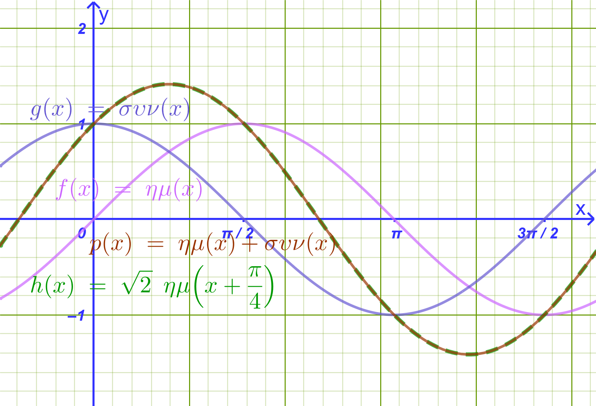
Παρατήρηση: Βλέπουμε ότι πράγματι η \(ημ x + συν x\) ταυτίζεται με την \(\sqrt{2}ημ\left(x + \dfrac{\pi}{4}\right)\)
1.3.2 Β. Γενίκευση: Το Θεώρημα Μετασχηματισμού & η Απόδειξή του
Θεώρημα
Αν \(α, β \neq 0\), τότε για κάθε \(x \in \mathbb{R}\) ισχύει: \[ αημ x + βσυν x = ρημ(x + \phi) \] όπου: \[ ρ = \sqrt{α^2 + β^2} \] και \(\phi \in \mathbb{R}\) είναι μια γωνία τέτοια ώστε:
\[ συν\phi = \frac{α}{ρ} = \frac{α}{\sqrt{α^2 + β^2}} \quad \text{και} \quad ημ\phi = \frac{β}{ρ} = \frac{β}{\sqrt{α^2 + β^2}} \]
Απόδειξη
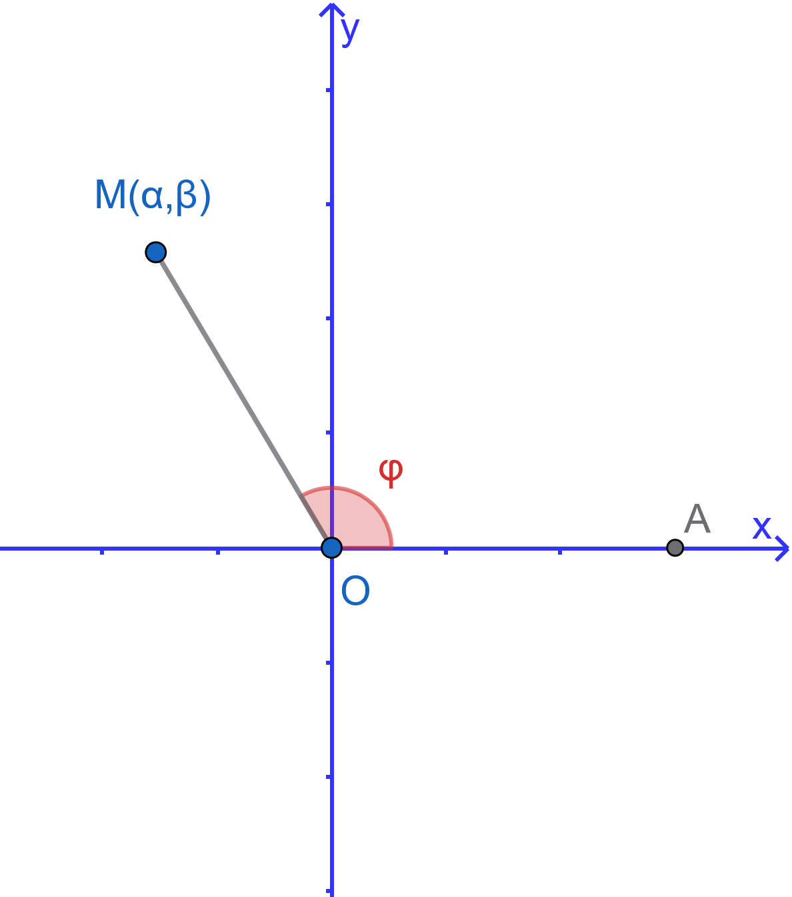
Θεωρούμε στο καρτεσιανό επίπεδο \(xOy\) το σημείο \(M(α, β)\).
Η απόσταση του σημείου \(M\) από την αρχή των αξόνων \(O(0,0)\) είναι: \[ OM = ρ = \sqrt{α^2 + β^2} > 0 \]
Έστω \(\phi\) μία γωνία που διαγράφεται από την περιστροφή του θετικού ημιάξονα \(Ox\) μέχρι την ημιευθεία \(OM\). Από τον ορισμό των τριγωνομετρικών αριθμών γωνίας στο επίπεδο, ισχύει: \[ συν\phi = \dfrac{α}{ρ} \implies α = ρσυν\phi \] \[ ημ\phi = \frac{β}{ρ} \implies β = ρημ\phi \]
Αντικαθιστούμε τις εκφράσεις των \(α\) και \(β\) στην αρχική παράσταση: \[ αημ x + βσυν x = (ρσυν\phi)ημ x + (ρημ\phi)συν x \] \[ = ρ \cdot (ημ x συν\phi + συν x ημ\phi) \]
Εφαρμόζοντας τον τύπο του ημιτόνου αθροίσματος γωνιών \(ημ(x + \phi) = ημ xσυν\phi + συν xημ\phi\), λαμβάνουμε: \[ αημ x + βσυν x = ρημ(x + \phi) \]
Όπερ έδει δείξαι.
1.4 Λυμένα Παραδείγματα
Παράδειγμα 1:
Μελέτη της \(f(x) = 2ημ\left(3x - \dfrac{\pi}{6}\right)\)
Λύση
Αναγωγή στη βασική μορφή:
Γράφουμε τον τύπο στη μορφή \(f(x) = 2ημ\left[3\left(x - \dfrac{\pi}{18}\right)\right]\).
Πεδίο Ορισμού: \(A = \mathbb{R}\).
Πλάτος & Ακρότατα:
Πλάτος: \(ρ = 2\).
Μέγιστη τιμή: \(M = 2\), όταν \(ημ\left(3x - \dfrac{\pi}{6}\right) = 1 \iff 3x - \dfrac{\pi}{6} = 2k\pi + \dfrac{\pi}{2} \iff 3x = 2k\pi + \dfrac{2\pi}{3} \iff x = \dfrac{2k\pi}{3} + \dfrac{2\pi}{9}, \quad k \in \mathbb{Z}\).
Ελάχιστη τιμή: \(m = -2\), όταν \(ημ\left(3x - \dfrac{\pi}{6}\right) = -1 \iff 3x - \dfrac{\pi}{6} = 2k\pi - \dfrac{\pi}{2} \iff 3x = 2k\pi - \dfrac{\pi}{3} \iff x = \dfrac{2k\pi}{3} - \dfrac{\pi}{9}, \quad k \in \mathbb{Z}\).
Περίοδος: \(T = \dfrac{2\pi}{ω} = \dfrac{2\pi}{3}\).
Γραφική Παράσταση: Προκύπτει από τη συνάρτηση \(g(x) = 2ημ(3x)\) (η οποία έχει περίοδο \(\dfrac{2\pi}{3}\) και πλάτος \(2\)) με οριζόντια μετατόπιση προς τα δεξιά κατά \(\dfrac{\pi}{18}\) μονάδες.
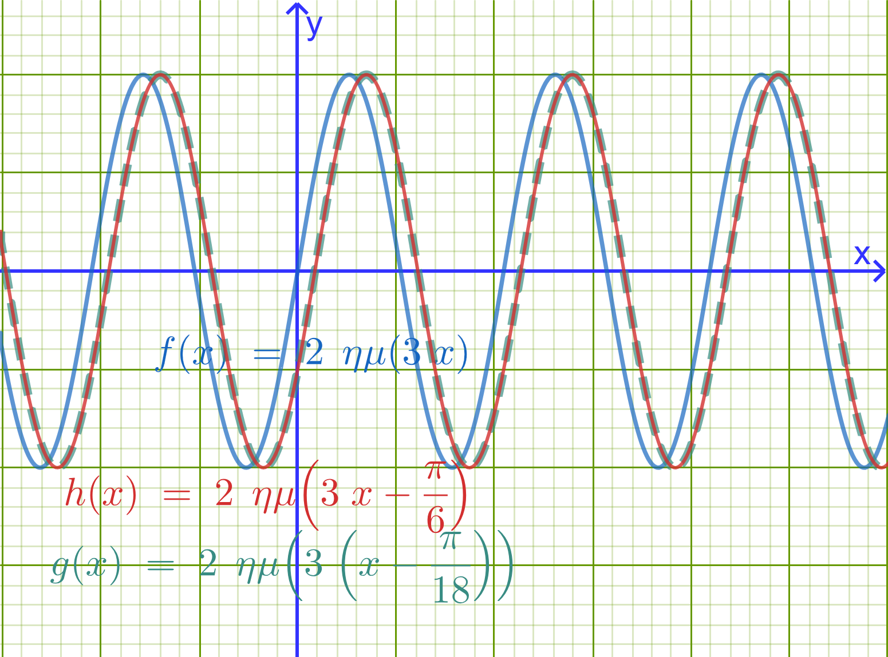
Παράδειγμα 2:
Μελέτη της \(f(x) = ημ(3x) - \sqrt{3}συν(3x)\)
Λύση
Μετασχηματισμός σε \(ρημ(ω x + \phi)\):
Έχουμε \(α = 1\) και \(β = -\sqrt{3}\).
\(ρ = \sqrt{1^2 + (-\sqrt{3})^2} = \sqrt{1 + 3} = \sqrt{4} = 2\).
Αναζητούμε γωνία \(\phi\) τέτοια ώστε: \[ συν\phi = \frac{α}{ρ} = \frac{1}{2} \quad \text{και} \quad ημ\phi = \frac{β}{ρ} = -\frac{\sqrt{3}}{2} \implies \phi = -\frac{\pi}{3} \]
Επομένως: \[ f(x) = 2ημ\left(3x - \frac{\pi}{3}\right) = 2ημ\left[3\left(x - \frac{\pi}{9}\right)\right] \]
- Μελέτη Συνάρτησης:
Πεδίο ορισμού: \(A = \mathbb{R}\).
Πλάτος: \(ρ = 2 \implies\) Μέγιστη τιμή \(M = 2\) και ελάχιστη τιμή \(m = -2\).
Περίοδος: \(T = \dfrac{2\pi}{3}\).
Γραφική παράσταση: Προκύπτει από τη \(g(x) = 2ημ(3x)\) με οριζόντια μετατόπιση κατά \(\dfrac{\pi}{9}\) μονάδες προς τα δεξιά.
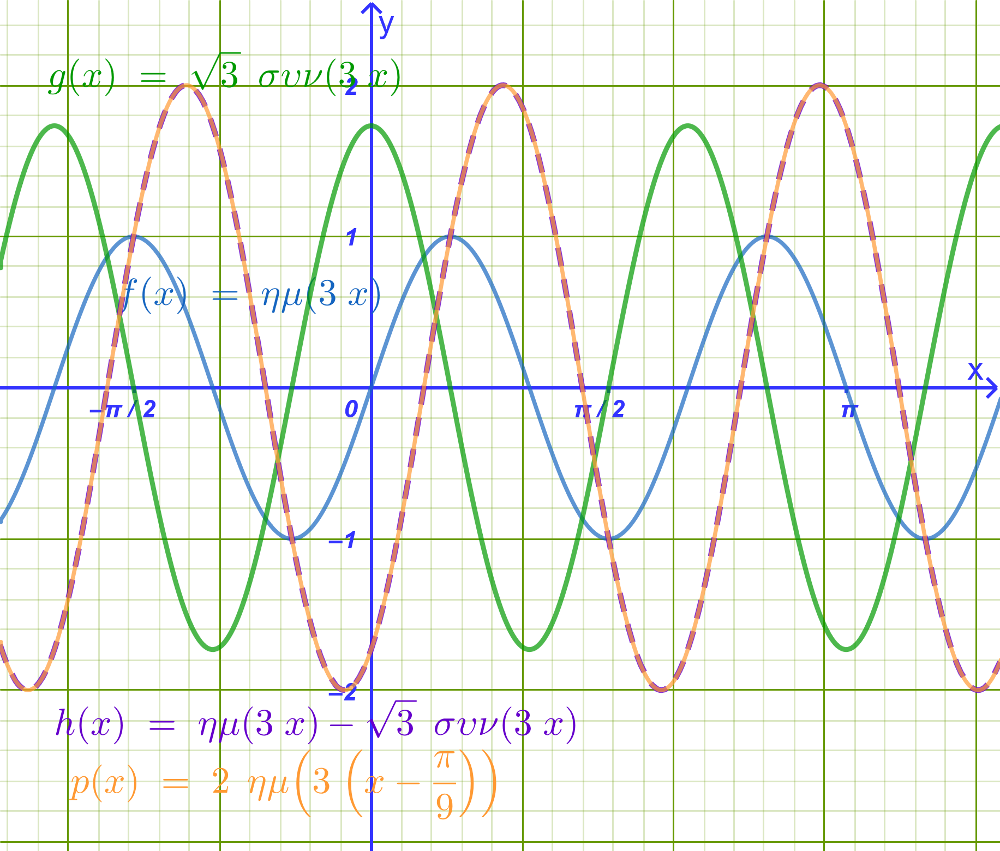
Παράδειγμα 3:
Να λυθεί η εξίσωση \(\sqrt{2}ημ(3x) + \sqrt{2}συν(3x) = 1\)
Λύση
Μετασχηματισμός του αριστερού μέλους:
Έχουμε \(α = \sqrt{2}\) και \(β = \sqrt{2}\).
\(ρ = \sqrt{(\sqrt{2})^2 + (\sqrt{2})^2} = \sqrt{2 + 2} = \sqrt{4} = 2\).
\(συν\phi = \dfrac{\sqrt{2}}{2}\) και \(ημ\phi = \dfrac{\sqrt{2}}{2} \implies \phi = \dfrac{\pi}{4}\).
Άρα το αριστερό μέλος γράφεται: \(2ημ\left(3x + \dfrac{\pi}{4}\right)\).
Επίλυση της Εξίσωσης: \[ 2ημ\left(3x + \dfrac{\pi}{4}\right) = 1 \iff ημ\left(3x + \frac{\pi}{4}\right) = \frac{1}{2} = ημ\frac{\pi}{6} \]
Διακρίνουμε δύο περιπτώσεις για \(k \in \mathbb{Z}\):
1η Περίπτωση: \[ 3x + \frac{\pi}{4} = 2k\pi + \frac{\pi}{6} \iff 3x = 2k\pi + \frac{\pi}{6} - \frac{\pi}{4} \iff \\ 3x = 2k\pi - \frac{\pi}{12} \iff x = \frac{2k\pi}{3} - \frac{\pi}{36} \]
2η Περίπτωση: \[ 3x + \frac{\pi}{4} = 2k\pi + \pi - \frac{\pi}{6} \iff 3x + \frac{\pi}{4} = 2k\pi + \frac{5\pi}{6} \iff \\ 3x = 2k\pi + \frac{7\pi}{12} \iff x = \frac{2k\pi}{3} + \frac{7\pi}{36} \]
Παράδειγμα 4:
Δύο εναλλασσόμενα ρεύματα με την ίδια κυκλική συχνότητα \(ω\) και εντάσεις: \[I_1 = 4\sin(ω t) \quad \text{και} \quad I_2 = 4\sin\left(ω t + \frac{\pi}{3}\right)\] διαρρέουν έναν αγωγό.
Να αποδείξετε ότι η συνολική ένταση του ρεύματος \(I = I_1 + I_2\) έχει την ίδια κυκλική συχνότητα \(ω\).
Να προσδιορίσετε το πλάτος \(I_0\) και την αρχική φάση \(\phi\) του συνολικού ρεύματος, γράφοντάς το στη μορφή: \[I = I_0 \sin(ω t + \phi)\]
Σύντομη υπόδειξη επίλυσης:
Εφαρμόζουμε τον τύπο μετατροπής αθροίσματος ημιτόνων σε γινόμενο:
\(\sin A + \sin B = 2\sin\left(\dfrac{A+B}{2}\right)\cos\left(\dfrac{A-B}{2}\right)\), από όπου προκύπτει \(I = 4\sqrt{3}\sin\left(ω t + \dfrac{\pi}{6}\right)\), που έχει την ίδια κυκλική συχνότητα \(ω\).
1.5 Ασκήσεις και Προβλήματα
1.5.1 Κατηγορία Α: Μετασχηματισμός Παραστάσεων (1–5)
- Να γράψετε στη μορφή \(f(x) = ρημ(x + \phi)\) τις παρακάτω συναρτήσεις:
α) \(f(x) = \sqrt{3}ημ x - συν x\)
β) \(f(x) = -ημ x + συν x\)
Να μετατραπεί η παράσταση \(A = 3ημ(2x) + 3\sqrt{3}συν(2x)\) στη μορφή \(ρημ(2x + \phi)\).
Να αποδείξετε ότι η παράσταση \(f(x) = 5ημ x + 12συν x\) παίρνει τη μορφή \(13ημ(x + \phi)\) και να υπολογίσετε τους τριγωνομετρικούς αριθμούς \(συν\phi\) και \(ημ\phi\).
Να μετατραπεί σε μορφή ημιτόνου η παράσταση \(g(x) = ημ(\pi x) + συν(\pi x)\).
Να αποδειχθεί ότι για κάθε \(x \in \mathbb{R}\) ισχύει \(-\sqrt{5} \le 2ημ x - συν x \le \sqrt{5}\).
Διότι \(ρ=\sqrt{2^2+(-1)^2}=\sqrt{5}\)
1.5.2 Κατηγορία Β: Μελέτη & Γραφική Παράσταση Συναρτήσεων (6–10)
Να βρείτε την περίοδο, τη μέγιστη και την ελάχιστη τιμή της συνάρτησης \(f(x) = 4ημ\left(2x + \dfrac{\pi}{4}\right)\).
Να μελετήσετε και να παραστήσετε γραφικά τη συνάρτηση \(f(x) = \sqrt{3}ημ x + συν x\) στο διάστημα \([0, 2\pi]\).
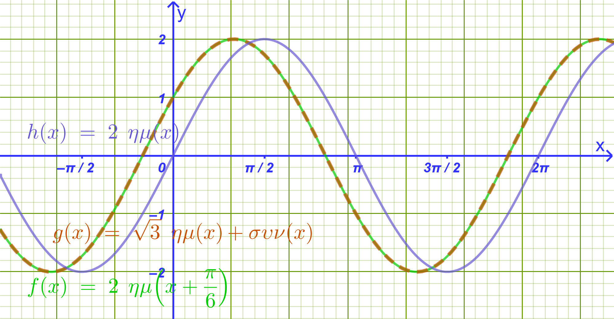
- Δίνεται η συνάρτηση \(f(x) = ημ(2x) - συν(2x)\).
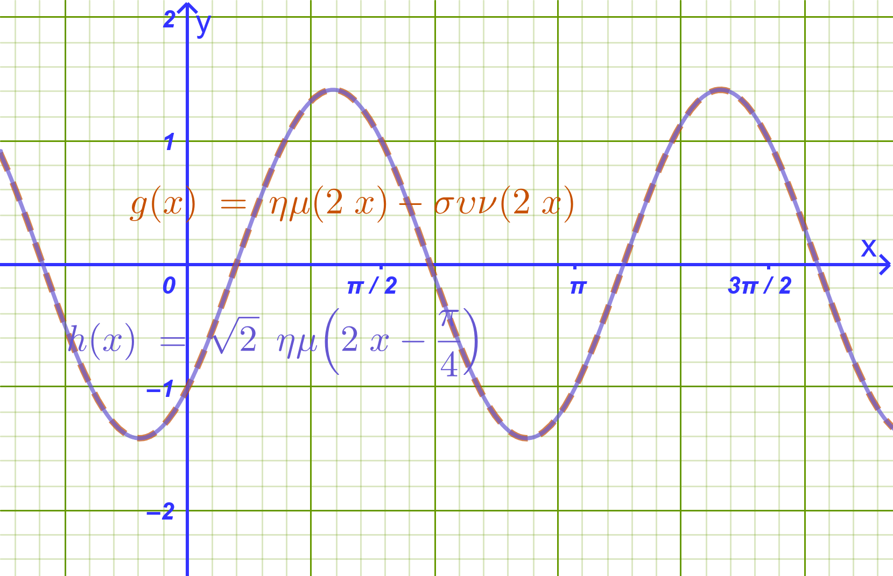
α) Να φέρετε τον τύπο της στη μορφή \(ρημ(ω x + \phi)\).
β) Να βρείτε τα σημεία τομής της γραφικής παράστασης της \(f\) με τον άξονα \(x'x\) στο διάστημα \([0, \pi]\).
- Να βρείτε τη διαφορά φάσεως και τη σχετική μετατόπιση μεταξύ των καμπυλών \(y = 2ημ x\) και \(y = 2ημ\left(x - \dfrac{\pi}{6}\right)\).
- Εκφώνηση
Να μελετήσετε ως προς τα ακρότατα και την περιοδικότητα τη συνάρτηση \(g(x) = 3ημ(4x) - 4συν(4x) + 2\).
Λύση
1. Περιοδικότητα
Η συνάρτηση αποτελείται από τους όρους \(\sin(4x)\) και \(\cos(4x)\), οι οποίοι έχουν την ίδια βασική περίοδο.
Για συναρτήσεις της μορφής \(\sin(ω x)\) και \(\cos(ω x)\) με \(ω = 4 > 0\), η βασική περίοδος \(T\) δίνεται από τον τύπο: \[T = \frac{2\pi}{ω} = \frac{2\pi}{4} = \frac{\pi}{2}\]
Επομένως, η συνάρτηση \(g\) είναι περιοδική με βασική περίοδο: \[T = \frac{\pi}{2}\]
2. Μετατροπή στη μορφή \(\rho\sin(4x + \phi)\)
Για να προσδιορίσουμε τα ακρότατα, μετατρέπουμε την παράσταση \(3\sin(4x) - 4\cos(4x)\) στη μορφή \(\rho\sin(4x + \phi)\):
Υπολογισμός του \(\rho\): \[\rho = \sqrt{a^2 + b^2} = \sqrt{3^2 + (-4)^2} = \sqrt{9 + 16} = \sqrt{25} = 5\]
Υπολογισμός της γωνίας \(\phi\): \[\cos\phi = \frac{a}{\rho} = \frac{3}{5} \quad \text{και} \quad \sin\phi = \frac{b}{\rho} = -\frac{4}{5}\]
(Υπάρχει μοναδική γωνία \(\phi ≈ -53,13^o \in (-\pi, \pi]\) στο \(4^\circ\) τεταρτημόριο που ικανοποιεί αυτές τις σχέσεις).
Συνεπώς, η παράσταση γράφεται: \[3\sin(4x) - 4\cos(4x) = 5\sin(4x + \phi)\]
και η συνάρτηση παίρνει τη μορφή: \[g(x) = 5\sin(4x + \phi) + 2\]
3. Ακρότατα
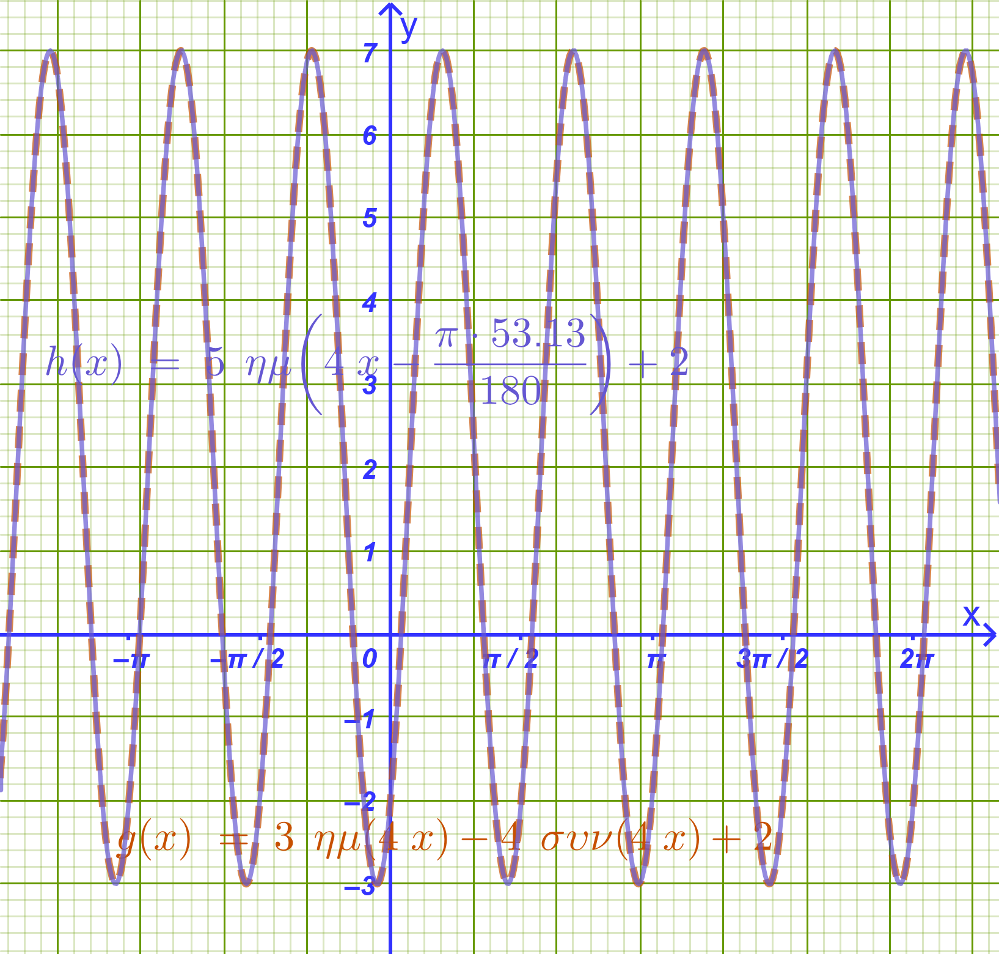
Για κάθε \(x \in \mathbb{R}\), η τιμή του ημιτόνου κυμαίνεται μεταξύ \(-1\) και \(1\): \[-1 \le \sin(4x + \phi) \le 1\]
Πολλαπλασιάζουμε όλα τα μέλη με το \(5\) (\(5 > 0\)): \[-5 \le 5\sin(4x + \phi) \le 5\]
Προσθέτουμε το \(2\) σε όλα τα μέλη: \[-5 + 2 \le 5\sin(4x + \phi) + 2 \le 5 + 2\] \[-3 \le g(x) \le 7\]
Μέγιστη τιμή: \[g_{\max} = 7\] (λαμβάνεται όταν \(\sin(4x + \phi) = 1\))
Ελάχιστη τιμή: \[g_{\min} = -3\] (λαμβάνεται όταν \(\sin(4x + \phi) = -1\))
Σύνοψη
Περίοδος: \(T = \dfrac{\pi}{2}\)
Μέγιστη τιμή: \(7\)
Ελάχιστη τιμή: \(-3\)
1.5.3 Κατηγορία Γ: Τριγωνομετρικές Εξισώσεις & Ανισώσεις (11–15)
Να λυθεί στο \(\mathbb{R}\) η εξίσωση: \(ημ x + συν x = \sqrt{2}\).
Να λυθεί στο \(\mathbb{R}\) η εξίσωση: \(\sqrt{3}ημ(2x) - συν(2x) = 1\).
Να λυθεί στο διάστημα \([0, 2\pi]\) η εξίσωση: \(ημ x - \sqrt{3}συν x = -\sqrt{3}\).
- Εκφώνηση
Να λυθεί η εξίσωση: \(ημ(3x) + συν(3x) = \sqrt{2}ημ x\).
Λύση
1: Μετατροπή του αριστερού μέλους στη μορφή \(\rho\sin(3x + \phi)\)
Για την παράσταση \(\sin(3x) + \cos(3x)\):
- \(\rho = \sqrt{1^2 + 1^2} = \sqrt{2}\)
Διαιρούμε και πολλαπλασιάζουμε με το \(\sqrt{2}\): \[\sin(3x) + \cos(3x) = \sqrt{2}\left(\frac{1}{\sqrt{2}}\sin(3x) + \frac{1}{\sqrt{2}}\cos(3x)\right)\]
Επειδή \(\cos\left(\dfrac{\pi}{4}\right) = \sin\left(\dfrac{\pi}{4}\right) = \dfrac{\sqrt{2}}{2} = \dfrac{1}{\sqrt{2}}\), έχουμε: \[\sin(3x) + \cos(3x) = \sqrt{2}\left(\sin(3x)\cos\left(\frac{\pi}{4}\right) + \cos(3x)\sin\left(\frac{\pi}{4}\right)\right) = \sqrt{2}\sin\left(3x + \frac{\pi}{4}\right)\]
2: Απλοποίηση της εξίσωσης
Αντικαθιστούμε στην αρχική εξίσωση: \[\sqrt{2}\sin\left(3x + \frac{\pi}{4}\right) = \sqrt{2}\sin x\]
Διαιρούμε και τα δύο μέλη με το \(\sqrt{2}\): \[\sin\left(3x + \frac{\pi}{4}\right) = \sin x\]
3: Επίλυση της βασικής τριγωνομετρικής εξίσωσης
Η εξίσωση \(\sin A = \sin B\) έχει τις λύσεις: \[A = 2k\pi + B \quad \text{ή} \quad A = 2k\pi + \pi - B, \quad k \in \mathbb{Z}\]
Διακρίνουμε δύο περιπτώσεις:
- 1η Περίπτωση:
\[3x + \frac{\pi}{4} = 2k\pi + x\] \[3x - x = 2k\pi - \frac{\pi}{4}\] \[2x = 2k\pi - \frac{\pi}{4}\] \[x = k\pi - \frac{\pi}{8}, \quad k \in \mathbb{Z}\]
- 2η Περίπτωση:
\[3x + \frac{\pi}{4} = 2k\pi + \pi - x\] \[3x + x = 2k\pi + \pi - \frac{\pi}{4}\] \[4x = 2k\pi + \frac{3\pi}{4}\] \[x = \frac{k\pi}{2} + \frac{3\pi}{16}, \quad k \in \mathbb{Z}\]
Τελικές Λύσεις
Οι λύσεις της εξίσωσης στο \(\mathbb{R}\) είναι: \[x = k\pi - \frac{\pi}{8} \quad \text{ή} \quad x = \frac{k\pi}{2} + \frac{3\pi}{16}, \quad k \in \mathbb{Z}\]
- Εκφώνηση
Να λυθεί στο \(\mathbb{R}\) η ανίσωση: \(ημ x + συν x > 1\).
Λύση
1: Μετατροπή σε ενιαία τριγωνομετρική συνάρτηση
Διαιρούμε και πολλαπλασιάζουμε το αριστερό μέλος με το \(\sqrt{1^2 + 1^2} = \sqrt{2}\): \[\sin x + \cos x = \sqrt{2}\left(\frac{1}{\sqrt{2}}\sin x + \frac{1}{\sqrt{2}}\cos x\right)\]
Επειδή \(\cos\left(\dfrac{\pi}{4}\right) = \sin\left(\dfrac{\pi}{4}\right) = \dfrac{\sqrt{2}}{2} = \dfrac{1}{\sqrt{2}}\), έχουμε: \[\sqrt{2}\left(\sin x \cos\frac{\pi}{4} + \cos x \sin\frac{\pi}{4}\right) = \sqrt{2}\sin\left(x + \frac{\pi}{4}\right)\]
Επομένως, η ανίσωση γίνεται: \[\sqrt{2}\sin\left(x + \frac{\pi}{4}\right) > 1 \iff \sin\left(x + \frac{\pi}{4}\right) > \frac{1}{\sqrt{2}} = \frac{\sqrt{2}}{2}\]
2: Επίλυση στο βασικό διάστημα \([0, 2\pi)\)
Θέτουμε \(u = x + \dfrac{\pi}{4}\). Η ανίσωση γίνεται: \[\sin u > \frac{\sqrt{2}}{2}\]
Στον τριγωνομετρικό κύκλο, η εξίσωση \(\sin u = \dfrac{\sqrt{2}}{2}\) έχει λύσεις στο \([0, 2\pi)\) τις: \[u = \frac{\pi}{4} \quad \text{και} \quad u = \pi - \frac{\pi}{4} = \frac{3\pi}{4}\]
Η συνάρτηση του ημιτόνου είναι μεγαλύτερη από \(\dfrac{\sqrt{2}}{2}\) για: \[\frac{\pi}{4} < u < \frac{3\pi}{4}\]
3: Εύρεση του \(x\) στο βασικό διάστημα
Επαναφέρουμε το \(u = x + \dfrac{\pi}{4}\): \[\frac{\pi}{4} < x + \frac{\pi}{4} < \frac{3\pi}{4}\]
Αφαιρούμε το \(\dfrac{\pi}{4}\) από όλα τα μέλη: \[\frac{\pi}{4} - \frac{\pi}{4} < x < \frac{3\pi}{4} - \frac{\pi}{4}\] \[0 < x < \frac{\pi}{2}\]
4: Γενικές λύσεις στο \(\mathbb{R}\)
Λόγω της περιοδικότητας της συνάρτησης του ημιτόνου με περίοδο \(T = 2\pi\), προσθέτουμε το \(2k\pi\) (\(k \in \mathbb{Z}\)): \[2k\pi < x < 2k\pi + \frac{\pi}{2}, \quad k \in \mathbb{Z}\]
ή σε μορφή διαστημάτων: \[x \in \bigcup_{k \in \mathbb{Z}} \left(2k\pi, \, 2k\pi + \frac{\pi}{2}\right)\]
1.5.4 Κατηγορία Δ: Ακρότατα & Σύνθετα Θέματα (16–18)
- Να βρεθεί η μέγιστη και η ελάχιστη τιμή της συνάρτησης \(f(x) = \dfrac{1}{ημ x + συν x + 2}\).
- Εκφώνηση
Δίνεται η συνάρτηση \(f(x) = αημ x + βσυν x\). Αν η μέγιστη τιμή της είναι \(M = 5\) και \(f\left(\dfrac{\pi}{6}\right) =\dfrac{5\sqrt{3}}{2}\), να προσδιοριστούν οι σταθερές \(α\) και \(β\).
Λύση
1: Αξιοποίηση της μέγιστης τιμής
Γνωρίζουμε ότι για συνάρτηση της μορφής \(f(x) = \alpha\sin x + \beta\cos x\), η μέγιστη τιμή της είναι: \[M = \sqrt{\alpha^2 + \beta^2}\]
Επειδή δίνεται ότι \(M = 5\), έχουμε: \[\sqrt{\alpha^2 + \beta^2} = 5 \iff \alpha^2 + \beta^2 = 25 \quad \text{(Σχέση 1)}\]
2: Αξιοποίηση της τιμής \(f\left(\dfrac{\pi}{6}\right)\)
Γνωρίζουμε ότι:
\[\sin\left(\frac{\pi}{6}\right) = \frac{1}{2} \quad \text{και} \quad \cos\left(\frac{\pi}{6}\right) = \frac{\sqrt{3}}{2}\]
Υπολογίζουμε την τιμή \(f\left(\dfrac{\pi}{6}\right)\): \[f\left(\frac{\pi}{6}\right) = \alpha \cdot \frac{1}{2} + \beta \cdot \frac{\sqrt{3}}{2} = \frac{\alpha + \beta\sqrt{3}}{2}\]
Από την υπόθεση ισχύει \(f\left(\dfrac{\pi}{6}\right) = \dfrac{5\sqrt{3}}{2}\), επομένως:
\[\frac{\alpha + \beta\sqrt{3}}{2} = \frac{5\sqrt{3}}{2} \iff \alpha + \beta\sqrt{3} = 5\sqrt{3} \iff \alpha = 5\sqrt{3} - \beta\sqrt{3} = \sqrt{3}(5 - \beta) \quad \text{(Σχέση 2)}\]
3: Επίλυση του συστήματος
Αντικαθιστούμε την έκφραση του \(\alpha\) από τη (Σχέση 2) στη (Σχέση 1):
\[[\sqrt{3}(5 - \beta)]^2 + \beta^2 = 25\] \[3(5 - \beta)^2 + \beta^2 = 25\] \[3(25 - 10\beta + \beta^2) + \beta^2 = 25\] \[75 - 30\beta + 3\beta^2 + \beta^2 = 25\] \[4\beta^2 - 30\beta + 50 = 0\]
Διαιρούμε όλους τους όρους με το \(2\): \[2\beta^2 - 15\beta + 25 = 0\]
Λύνουμε το τριώνυμο ως προς \(\beta\):
- \(\Delta = (-15)^2 - 4 \cdot 2 \cdot 25 = 225 - 200 = 25\) \[\beta = \frac{15 \pm \sqrt{25}}{2 \cdot 2} = \frac{15 \pm 5}{4}\]
Άρα:
\[\beta_1 = \frac{15 + 5}{4} = \frac{20}{4} = 5\] \[\beta_2 = \frac{15 - 5}{4} = \frac{10}{4} = \frac{5}{2}\]
4: Προσδιορισμός του \(\alpha\) για κάθε περίπτωση
Χρησιμοποιούμε τη σχέση \(\alpha = \sqrt{3}(5 - \beta)\):
Αν \(\beta = 5\): \[\alpha = \sqrt{3}(5 - 5) = 0\]
Αν \(\beta = \frac{5}{2}\): \[\alpha = \sqrt{3}\left(5 - \frac{5}{2}\right) = \sqrt{3} \cdot \frac{5}{2} = \frac{5\sqrt{3}}{2}\]
Τελικό Αποτέλεσμα
Τα ζεύγη τιμών \((\alpha, \beta)\) είναι:
\[(\alpha, \beta) = (0, \, 5) \quad \text{ή} \quad (\alpha, \beta) = \left(\frac{5\sqrt{3}}{2}, \, \frac{5}{2}\right)\]
- Να βρεθεί το σύνολο τιμών της συνάρτησης \(f(x) = ημ^2 x + 2ημ xσυν x - 3συν^2 x\)
(Υπόδειξη: χρησιμοποιήστε τους τύπους διπλάσιας γωνίας).
Θα καταλήξουμε στο \(f(x)=2ημ2x-4συν2x-2\)
η \(2ημ2x-4συν2x\) έχει \(ρ=2\sqrt{5}\). Αρα \(-2-2\sqrt{5} \le f*x) \le -2+2\sqrt{5}\)
1.5.5 Κατηγορία Ε: Πρακτικές Εφαρμογές & Φυσική (19–20)
- (Σύνθεση Ταλαντώσεων): Ένα σώμα εκτελεί ταυτόχρονα δύο απλές αρμονικές ταλαντώσεις ίδιας συχνότητας στην ίδια διεύθυνση, με απομακρύνσεις \(x_1(t) = 3ημ(ω t)\) και \(x_2(t) = 4συν(ω t)\) (σε μέτρα).
α) Να γράψετε τη συνολική απομάκρυνση \(x(t) = x_1(t) + x_2(t)\) στη μορφή \(x(t) = Aημ(ω t + \phi)\).
β) Να υπολογίσετε το πλάτος \(A\) της συνισταμένης ταλάντωσης.
Υπόδειξη:
\(x(t) = x_1(t) + x_2(t)=3ημ(ω t)+4συν(ωt)=5ημ(ωt+53,13^o)\), Επειδή \(A=\sqrt{3^2+4^2}=5\) και \(συνφ=\dfrac{3}{5}, \ \ \ ημφ=\dfrac{4}{5} \implies φ=ημ^{-1}\dfrac{4}{5} \approx 53,13^o\)
- (Εναλλασσόμενο Ρεύμα): Η ένταση ενός εναλλασσόμενου ρεύματος δίνεται από τον τύπο \(I(t) = 5ημ(100\pi t) + 5\sqrt{3}συν(100\pi t)\) (σε Ampere).
α) Να υπολογίσετε το μέγιστο πλάτος της έντασης του ρεύματος.
β) Να βρείτε την πρώτη θετική χρονική στιγμή \(t > 0\) κατά την οποία η ένταση γίνεται μέγιστη.
Υπόδειξη:
\(I(t) = 5ημ(100\pi t) + 5\sqrt{3}συν(100\pi t)=10ημ(100πt+\dfrac{π}{3})\), Επειδή \(ρ=\sqrt{5^2+5^23}=10\) και \(συνφ=\dfrac{5}{10}=\dfrac{1}{2}=συν\dfrac{π}{3}=ημφ=\dfrac{5\sqrt{3}}{10}=\dfrac{\sqrt{3}}{2}=ημ\dfrac{π}{3}\)
Πρέπει \(10ημ(100πt+\dfrac{π}{3})=10 \implies ημ(100πt+\dfrac{π}{3})=1=ημ\dfrac{π}{2}\)
Λύνοντας βρίσκουμε \(t=\dfrac{1}{600}\)
1.6 …… Ασκήσεων συνέχεια
Να βρείτε την περίοδο, τη μέγιστη τιμή και την ελάχιστη τιμή των παρακάτω συναρτήσεων και στη συνέχεια να τις παραστήσετε γραφικά:
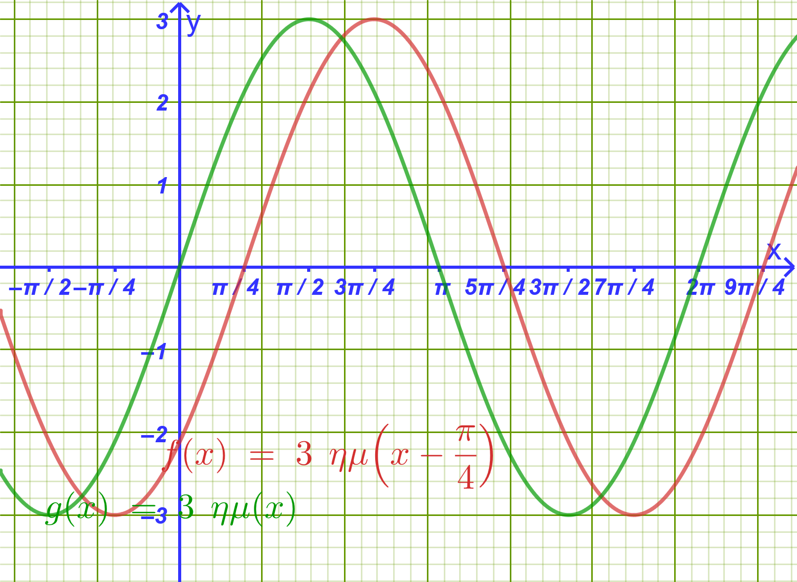
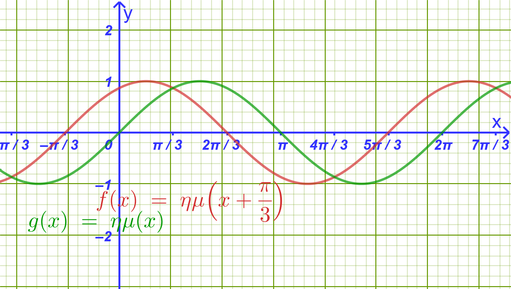
Να γράψετε στη μορφή \(f(x) = ρημ(x + \phi)\) τις συναρτήσεις:
\(f(x) = ημ x + \sqrt{3}συν x\)
\(f(x) = -\sqrt{3}ημ x + συν x\)
\(f(x) = -ημ x - συν x\)
\(f(x) = \sqrt{3}ημ x - συν x\)
- Να μελετήσετε (πεδίο ορισμού, σύνολο τιμών, περίοδο, μονοτονία και ακρότατα σε διάστημα μιας περιόδου) και να παραστήσετε γραφικά τις συναρτήσεις της προηγούμενης άσκησης.
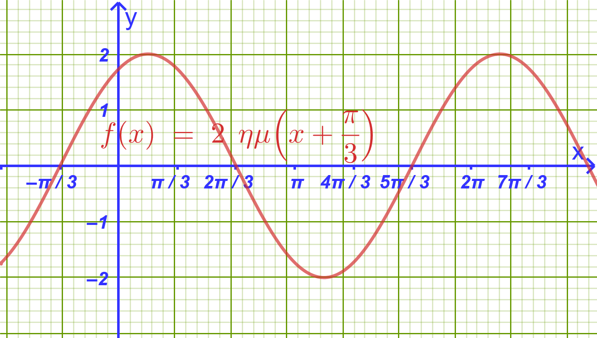
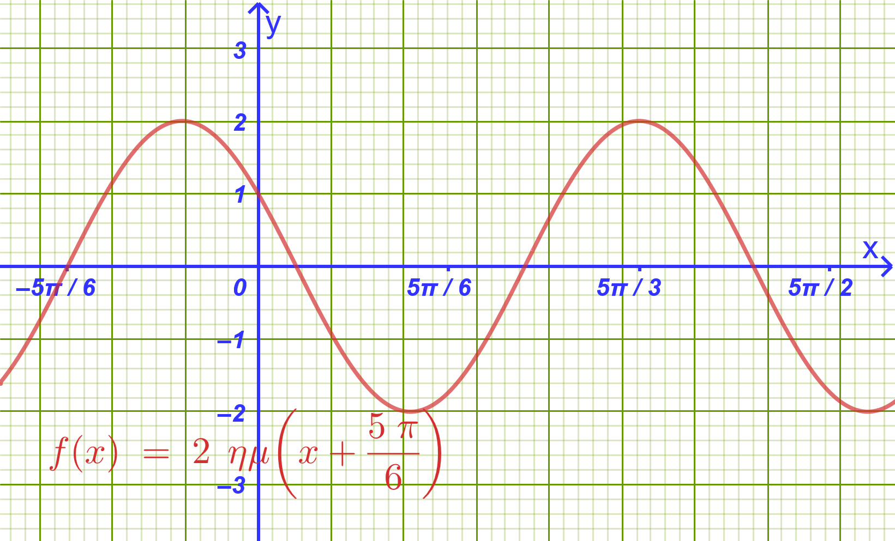
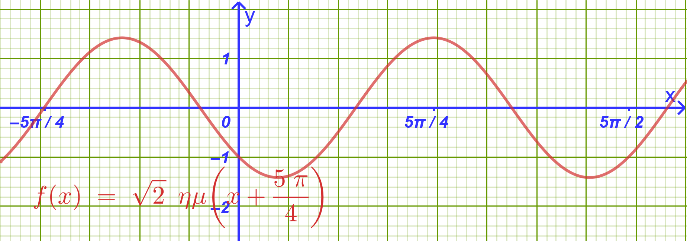
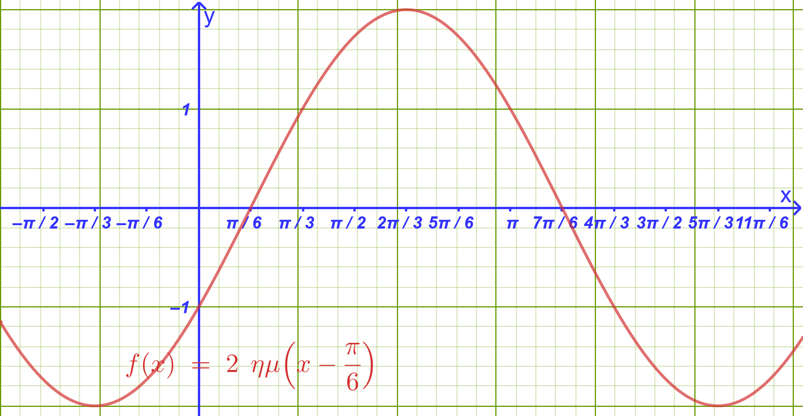
- Να λύσετε στο \(\mathbb{R}\) τις εξισώσεις:
Υπόδειξη:
\(ημ x + \sqrt{3}συν x = \sqrt{2} \implies 2ημ\left(x+\dfrac{π}{3}\right)=\sqrt{2} \implies .........\)
Υπόδειξη:
\(συν x - \sqrt{3}ημ x = 1 \implies - \sqrt{3}ημ x+συν x = 1 \implies 2ημ\left(x+\dfrac{5π}{6}\right)=1 \implies ..................\)
Υπόδειξη:
\(\sqrt{3}ημ x + 3συν x + \sqrt{6} = 0 \implies 2\sqrt{3} ημ \left( x+ \dfrac{π}{3} \right)=-\sqrt{6} \implies 2ημ\left( x+\dfrac{π}{3}\right)= -\sqrt{2} \implies ..............\)
- Σε ημικύκλιο διαμέτρου \(AB = 6\), θεωρούμε σημείο \(M\) του ημικυκλίου. Συμβολίζουμε με \(ω = \widehat{MAB}\) τη γωνία που σχηματίζει η χορδή \(AM\) με τη διάμετρο (\(0 < ω < \dfrac{\pi}{2}\)). Να υπολογίσετε τη γωνία \(ω\), έτσι ώστε να ισχύει:
\[(MA) + (MB) = 6\sqrt{2}\]
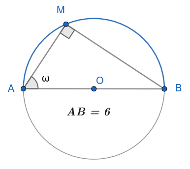
Υπόδειξη:
\(MA=6συνω\) και \(ΜΒ=6ημω\) , άρα \(ΜΑ+ΜΒ=6\sqrt{2} \implies 6ημω+6συνω=6\sqrt{2} \implies ..........\)
Μία δοκός \(AB\) μήκους \(4\text{ m}\) τοποθετείται οριζόντια μεταξύ δύο κάθετων τοίχων που τέμνονται σε ορθή γωνία \(O\).
Να εκφράσετε το άθροισμα των αποστάσεων \((OA) + (OB)\) ως συνάρτηση της οξείας γωνίας \(\theta = \widehat{OAB}\).
Να βρείτε την τιμή της γωνίας \(\theta\) για την οποία το \((OA) + (OB)\) γίνεται μέγιστο, καθώς και την τιμή του μεγίστου αυτού.
Παρόμοια με την 5.
- Να βρείτε τη μέγιστη και την ελάχιστη τιμή των συναρτήσεων:
Υπόδειξη:
\(-5 \le f(x) \le 5 \implies -7 \le f(x)-2 \le 3\)
Υπόδειξη:
\(f(x) = 6συν x(ημ x - συν x) = 6ημxσυνx-6συν^2x=3ημ2x - 3(1+συν2x) = ...............\)
- Να λύσετε στο \(\mathbb{R}\) την εξίσωση: \[2ημ x(συν x - \sqrt{3}ημ x) = 1 - \sqrt{3}\]
Υπόδειξη:
\(2ημ x(συν x - \sqrt{3}ημ x) = 1 - \sqrt{3} \implies 2ημxσυνx -\sqrt{3} \cdot 2ημ\^2x = 1-\sqrt{3} \implies \\ ....... ημ2x+\sqrt{3} συν2x = 1 ...................\)
Με σύρμα μήκους \(60\text{ m}\) περιφράζουμε οικόπεδο σχήματος ορθογωνίου τριγώνου. Αν η υποτείνουσα έχει μήκος \(h\text{ m}\) και η μία οξεία γωνία είναι \(\theta\text{ rad}\):
Να αποδείξετε ότι: \[h = \frac{60}{ημ\theta + συν\theta + 1}\]
Για ποια τιμή του \(\theta\) η υποτείνουσα \(h\) παίρνει την ελάχιστη (μικρότερη) δυνατή τιμή και ποια είναι αυτή;
\(h+h ημθ +h συνθ=60\)
Όταν το \(1+ ημθ + συνθ\) γίνεται μέγιστο.
2 ΔΙΑΓΩΝΙΣΜΑ ΑΞΙΟΛΟΓΗΣΗΣ
Μάθημα: Άλγεβρα Β’ Γενικού Λυκείου
Ενότητα: Η Συνάρτηση \(f(x) = α ημ x + β συν x\)
Διάρκεια: 60 λεπτά
2.1 ΘΕΜΑ Α (Θεωρία & Ερωτήσεις Κατανόησης - 25 Μονάδες)
Α1. (10 Μονάδες)
Να διατυπώσετε και να αποδείξετε το θεώρημα μετασχηματισμού της παράστασης \(f(x) = α ημ x + β συν x\) (\(α, β \neq 0\)) στη μορφή \(f(x) = ρ ημ(x + \phi)\).
Α2. (5 Μονάδες)
Δίνεται η συνάρτηση \(f(x) = ρ ημ(ω x + \phi)\) με \(ρ > 0\) και \(ω > 0\).
Τι ονομάζεται πλάτος και τι αρχική φάση της συνάρτησης;
Ποια είναι η βασική περίοδος \(T\), η μέγιστη τιμή \(M\) και η ελάχιστη τιμή \(m\) της συνάρτησης;
Α3. (10 Μονάδες)
Να χαρακτηρίσετε τις παρακάτω προτάσεις ως Σωστό (Σ) ή Λάθος (Λ):
Η μέγιστη τιμή της συνάρτησης \(f(x) = 3 ημ x + 4 συν x\) είναι \(M = 7\).
Η γραφική παράσταση της συνάρτησης \(f(x) = 2 ημ\left(x + \dfrac{\pi}{3}\right)\) προκύπτει από τη \(g(x) = 2 ημ x\) με οριζόντια μετατόπιση κατά \(\dfrac{\pi}{3}\) μονάδες προς τα αριστερά.
Η βασική περίοδος της συνάρτησης \(f(x) = \sqrt{3} ημ(2x) - συν(2x)\) είναι \(T = \pi\).
Για κάθε \(x \in \mathbb{R}\) ισχύει \(-\sqrt{α^2 + β^2} \le α ημ x + β συν x \le \sqrt{α^2 + β^2}\).
Η συνάρτηση \(f(x) = ημ x + συν x\) είναι περιττή συνάρτηση.
2.2 ΘΕΜΑ Β (Μετασχηματισμός & Μελέτη Συνάρτησης - 25 Μονάδες)
Δίνεται η συνάρτηση \(f(x) = ημ x - \sqrt{3}συν x\).
Β1. Να μετατρέψετε τον τύπο της \(f(x)\) στη μορφή \(f(x) = ρ ημ(x + \phi)\). (8 μονάδες)
Β2. Να βρείτε το πλάτος \(ρ\), τη βασική περίοδο \(T\), τη μέγιστη τιμή \(M\) και την ελάχιστη τιμή \(m\) της \(f(x)\). (8 μονάδες)
Β3. Να υπολογίσετε τα σημεία τομής της γραφικής παράστασης \(C_f\) με τον άξονα \(x'x\) στο διάστημα \([0, 2\pi]\). (9 μονάδες)
2.3 ΘΕΜΑ Γ (Τριγωνομετρικές Εξισώσεις - 25 Μονάδες)
Γ1. Να λύσετε στο \(\mathbb{R}\) την εξίσωση: \[ημ x + συν x = \sqrt{2}\] (12 μονάδες)
Γ2. Να λύσετε στο \(\mathbb{R}\) την εξίσωση: \[\sqrt{3}ημ(2x) - συν(2x) = 1\] (13 μονάδες)
2.4 ΘΕΜΑ Δ (Ακρότατα & Πρακτική Εφαρμογή - 25 Μονάδες)
Δ1. Να βρεθεί η μέγιστη και η ελάχιστη τιμή της συνάρτησης: \[g(x) = \frac{6}{3ημ x + 4συν x + 10}\] (12 μονάδες)
Δ2. Η απομάκρυνση ενός σώματος που εκτελεί σύνθετη αρμονική ταλάντωση δίνεται από τη συνάρτηση: \[x(t) = 3ημ(10t) + 3\sqrt{3}συν(10t) \quad (\text{σε μέτρα}, t \ge 0 \text{ σε δευτερόλεπτα})\]
Να γράψετε τη συνάρτηση \(x(t)\) στη μορφή \(x(t) = A ημ(10t + \phi)\). (6 μονάδες)
Να βρείτε το πλάτος \(A\) της ταλάντωσης και την πρώτη θετική χρονική στιγμή \(t > 0\) κατά την οποία η απομάκρυνση \(x(t)\) γίνεται μέγιστη. (7 μονάδες)
3 ΑΝΑΛΥΤΙΚΕΣ ΛΥΣΕΙΣ ΔΙΑΓΩΝΙΣΜΑΤΟΣ
3.1 ΘΕΜΑ Α
Α1. Θεώρημα: Αν \(α, β \neq 0\), τότε για κάθε \(x \in \mathbb{R}\) ισχύει \(α ημ x + β συν x = ρ ημ(x + \phi)\), όπου \(ρ = \sqrt{α^2 + β^2}\) και \(\phi \in \mathbb{R}\) με \(συν\phi = \dfrac{α}{ρ}\) και \(ημ\phi = \dfrac{β}{ρ}\).
Απόδειξη: Θεωρούμε στο επίπεδο το σημείο \(M(α, β)\) με απόσταση από την αρχή των αξόνων \(OM = ρ = \sqrt{α^2 + β^2} > 0\). Αν \(\phi\) είναι η γωνία που σχηματίζει η ημιευθεία \(OM\) με τον θετικό ημιάξονα \(Ox\), τότε \(συν\phi = \dfrac{α}{ρ} \iff α = ρσυν\phi\) και \(ημ\phi = \dfrac{β}{ρ} \iff β = ρημ\phi\).
Αντικαθιστώντας στην αρχική παράσταση: \[α ημ x + β συν x = (ρσυν\phi)ημ x + (ρημ\phi)συν x = ρ(ημ xσυν\phi + συν xημ\phi) = \mathbf{ρ ημ(x + \phi)}\].
Α2.
Πλάτος ονομάζεται ο θετικός αριθμός \(ρ\), που εκφράζει τη μέγιστη απομάκρυνση από τον άξονα ισορροπίας. Αρχική φάση ονομάζεται η σταθερά \(\phi\).
Βασική περίοδος: \(T = \dfrac{2\pi}{ω}\), μέγιστη τιμή: \(M = ρ\), ελάχιστη τιμή: \(m = -ρ\).
Α3.
Λάθος (Η μέγιστη τιμή είναι \(M = \sqrt{3^2 + 4^2} = 5\)).
Σωστό (Επειδή \(f(x) = g\left(x + \dfrac{\pi}{3}\right)\), η γραφική παράσταση μετατοπίζεται κατά \(\dfrac{\pi}{3}\) αριστερά).
Σωστό (Ο συντελεστής είναι \(ω = 2\), άρα \(T = \dfrac{2\pi}{2} = \pi\)).
Σωστό (Ισχύει διότι \(-ρ \le ρημ(x+\phi) \le ρ\)).
Λάθος (Ισχύει \(f(-x) = -ημ x + συν x \neq -f(x)\)).
3.2 ΘΕΜΑ Β
Β1. Έχουμε \(α = 1\) και \(β = -\sqrt{3}\).
\(ρ = \sqrt{1^2 + (-\sqrt{3})^2} = \sqrt{1 + 3} = \sqrt{4} = \mathbf{2}\).
Αναζητούμε γωνία \(\phi\) τέτοια ώστε: \[συν\phi = \frac{1}{2} \quad \text{και} \quad ημ\phi = -\frac{\sqrt{3}}{2} \implies \mathbf{\phi = -\frac{\pi}{3}}\].
Άρα ο τύπος της συνάρτησης γράφεται: \[\mathbf{f(x) = 2 ημ\left(x - \frac{\pi}{3}\right)}\]
Β2.
Πλάτος: \(ρ = 2\).
Βασική περίοδος: \(T = \dfrac{2\pi}{1} = 2\pi\).
Μέγιστη τιμή: \(M = 2\).
Ελάχιστη τιμή: \(m = -2\).
Β3. Για να βρούμε τα σημεία τομής με τον άξονα \(x'x\), λύνουμε την εξίσωση \(f(x) = 0\): \[2 ημ\left(x - \frac{\pi}{3}\right) = 0 \iff ημ\left(x - \frac{\pi}{3}\right) = 0 \iff x - \frac{\pi}{3} = k\pi \iff \mathbf{x = k\pi + \frac{\pi}{3}}, \quad k \in \mathbb{Z}\] Αναζητούμε τις λύσεις στο διάστημα \([0, 2\pi]\):
Για \(k = 0 \implies \mathbf{x_1 = \dfrac{\pi}{3}} \in [0, 2\pi]\), οπότε έχουμε το σημείο \(A\left(\dfrac{\pi}{3}, 0\right)\).
Για \(k = 1 \implies \mathbf{x_2 = \pi + \dfrac{\pi}{3} = \dfrac{4\pi}{3}} \in [0, 2\pi]\), οπότε έχουμε το σημείο \(B\left(\dfrac{4\pi}{3}, 0\right)\).
3.3 ΘΕΜΑ Γ
Γ1. Μετασχηματίζουμε το αριστερό μέλος: \(ημ x + συν x = \sqrt{2}ημ\left(x + \dfrac{\pi}{4}\right)\).
Η εξίσωση γίνεται: \[\sqrt{2}ημ\left(x + \frac{\pi}{4}\right) = \sqrt{2} \iff ημ\left(x + \frac{\pi}{4}\right) = 1 \iff x + \frac{\pi}{4} = 2k\pi + \frac{\pi}{2} \iff \mathbf{x = 2k\pi + \frac{\pi}{4}}, \quad k \in \mathbb{Z}\]
Γ2. Για το αριστερό μέλος έχουμε \(α = \sqrt{3}\) και \(β = -1\).
\(ρ = \sqrt{(\sqrt{3})^2 + (-1)^2} = 2\).
\(συν\phi = \dfrac{\sqrt{3}}{2}\) και \(ημ\phi = -\dfrac{1}{2} \implies \phi = -\dfrac{\pi}{6}\).
Άρα το αριστερό μέλος είναι \(2ημ\left(2x - \dfrac{\pi}{6}\right)\). Η εξίσωση γράφεται: \[2ημ\left(2x - \frac{\pi}{6}\right) = 1 \iff ημ\left(2x - \frac{\pi}{6}\right) = \frac{1}{2} = ημ\frac{\pi}{6}\]
1η περίπτωση: \(2x - \dfrac{\pi}{6} = 2k\pi + \dfrac{\pi}{6} \iff 2x = 2k\pi + \dfrac{\pi}{3} \iff \mathbf{x = k\pi + \dfrac{\pi}{6}}, \quad k \in \mathbb{Z}\).
2η περίπτωση: \(2x - \dfrac{\pi}{6} = 2k\pi + \pi - \dfrac{\pi}{6} \iff 2x = 2k\pi + \pi \iff \mathbf{x = k\pi + \dfrac{\pi}{2}}, \quad k \in \mathbb{Z}\).
3.4 ΘΕΜΑ Δ
Δ1. Θεωρούμε την παράσταση του παρονομαστή \(h(x) = 3ημ x + 4συν x\).
Μετασχηματίζουμε τη συνάρτηση \(h(x)\): \(α = 3, β = 4 \implies ρ = \sqrt{3^2 + 4^2} = 5\).
Επομένως, για κάθε \(x \in \mathbb{R}\) ισχύει: \[-5 \le 3ημ x + 4συν x \le 5\]
Προσθέτουμε το \(10\) σε όλα τα μέλη: \[5 \le 3ημ x + 4συν x + 10 \le 15\]
Επειδή όλοι οι όροι είναι θετικοί, αντιστρέφουμε και πολλαπλασιάζουμε με το \(6\): \[\frac{6}{15} \le \frac{6}{3ημ x + 4συν x + 10} \le \frac{6}{5} \iff \mathbf{\frac{2}{5} \le g(x) \le \frac{6}{5}}\]
Ελάχιστη τιμή: \(m = \dfrac{2}{5}\).
Μέγιστη τιμή: \(M = \dfrac{6}{5}\).
Δ2.1. Για τη συνάρτηση \(x(t) = 3ημ(10t) + 3\sqrt{3}συν(10t)\) έχουμε \(α = 3\) και \(β = 3\sqrt{3}\).
\(A = \sqrt{3^2 + (3\sqrt{3})^2} = \sqrt{9 + 27} = \sqrt{36} = \mathbf{6}\).
\(συν\phi = \dfrac{3}{6} = \dfrac{1}{2}\) και \(ημ\phi = \dfrac{3\sqrt{3}}{6} = \dfrac{\sqrt{3}}{2} \implies \phi = \dfrac{\pi}{3}\).
Άρα ο τύπος της απομάκρυνσης είναι: \[\mathbf{x(t) = 6ημ\left(10t + \frac{\pi}{3}\right)}\]
Δ2.2.
Το πλάτος της ταλάντωσης είναι \(A = 6 \text{ m}\).
Η απομάκρυνση γίνεται μέγιστη όταν \(ημ\left(10t + \dfrac{\pi}{3}\right) = 1\): \[10t + \frac{\pi}{3} = 2k\pi + \frac{\pi}{2} \iff 10t = 2k\pi + \frac{\pi}{2} - \frac{\pi}{3} \iff 10t = 2k\pi + \frac{\pi}{6} \iff t = \frac{2k\pi}{10} + \frac{\pi}{60}\]
Για να βρούμε την πρώτη θετική χρονική στιγμή (\(t > 0\)), θέτουμε \(k = 0\): \[\mathbf{t = \frac{\pi}{60} \text{ sec}}\]
4 ΕΠΑΝΑΛΗΠΤΙΚΟ ΔΙΑΓΩΝΙΣΜΑ: ΟΛΟΚΛΗΡΟ ΤΟ ΚΕΦΑΛΑΙΟ ΤΗΣ ΤΡΙΓΩΝΟΜΕΤΡΙΑΣ
Μάθημα: Άλγεβρα Β’ Γενικού Λυκείου
Ύλη: Τριγωνομετρικοί Αριθμοί, Συναρτήσεις, Εξισώσεις, Αθροίσματα, Διπλάσιο Τόξο & Μετασχηματισμοί
Διάρκεια: 3 Ώρες
4.1 ΘΕΜΑ Α (Θεωρία & Ερωτήσεις Κατανόησης - 25 Μονάδες)
Α1. (8 Μονάδες)
Να αποδείξετε ότι για κάθε γωνία \(α \in \mathbb{R}\) ισχύει \(συν(2α) = 1 - 2ημ^2α\).
Με τη βοήθεια του παραπάνω τύπου, να αποδείξετε τον τύπο αποτετραγωνισμού: \[ημ^2α = \frac{1 - συν(2α)}{2} \quad\]
Α2. (5 Μονάδες) 1. Πότε μια συνάρτηση \(f\) ονομάζεται περιοδική με περίοδο \(T > 0\);
- Ποια είναι η βασική περίοδος \(T\), η μέγιστη τιμή \(M\) και η ελάχιστη τιμή \(m\) της συνάρτησης \(f(x) = ρημ(ω x)\) με \(ρ > 0\) και \(ω > 0\);
Α3. (8 Μονάδες)
Να χαρακτηρίσετε τις παρακάτω προτάσεις ως Σωστό (Σ) ή Λάθος (Λ): 1. Για κάθε γωνία \(x \in \mathbb{R}\) ισχύει \(ημ^2 x + συν^2 x = 1\).
Η συνάρτηση \(f(x) = εφ x\) είναι περιοδική με βασική περίοδο \(T = 2\pi\).
Για οποιεσδήποτε γωνίες \(α, β\) ισχύει \(ημ(α - β) = ημασυνβ - συναημβ\).
Η εξίσωση \(ημ x = 2\) έχει άπειρες λύσεις στο \(\mathbb{R}\).
Για κάθε \(α, β \in \mathbb{R}\) ισχύει \(2ημασυνβ = ημ(α + β) + ημ(α - β)\).
Α4. (4 Μονάδες)
Να συμπληρώσετε τα κενά στις παρακάτω τριγωνομετρικές ταυτότητες:
α) \(ημ(2α) = \text{...........}\)
β) \(συν(α + β) = \text{...........}\)
γ) \(ημ A + ημ B = \text{...........}\)
4.2 ΘΕΜΑ Β (Υπολογισμοί & Ταυτότητες - 25 Μονάδες)
Β1. (12 Μονάδες)
Δίνεται γωνία \(x\) με \(ημ x = \dfrac{3}{5}\) και \(\dfrac{\pi}{2} < x < \pi\) (2ο τεταρτημόριο).
Να υπολογίσετε το \(συν x\) και την \(εφ x\).
Να υπολογίσετε τους τριγωνομετρικούς αριθμούς \(ημ(2x)\), \(συν(2x)\) και \(εφ(2x)\).
Β2. (6 Μονάδες)
Να υπολογίσετε την ακριβή τιμή του \(συν 105^\circ\) χωρίς τη χρήση υπολογιστή τσέπης.
Β3. (7 Μονάδες)
Να αποδείξετε ότι για κάθε γωνία \(x\) για την οποία ορίζονται οι παραστάσεις ισχύει η ταυτότητα: \[\frac{ημ(2x)}{1 + συν(2x)} = εφ x \quad\]
4.3 ΘΕΜΑ Γ (Τριγωνομετρικές Εξισώσεις - 25 Μονάδες)
Γ1. (12 Μονάδες)
Να λύσετε στο \(\mathbb{R}\) την εξίσωση: \[2ημ^2 x - 3ημ x + 1 = 0\]
Γ2. (13 Μονάδες)
Να λύσετε στο \(\mathbb{R}\) την εξίσωση: \[ημ(5x) + ημ(3x) + ημ x = 0 \quad\]
4.4 ΘΕΜΑ Δ (Σύνθετη Συνάρτηση & Εφαρμογές - 25 Μονάδες)
Δίνεται η συνάρτηση \(f(x) = ημ x + \sqrt{3}συν x\) ορισμένη στο \(\mathbb{R}\).
Δ1. (16 Μονάδες)
Να γράψετε τον τύπο της \(f(x)\) στη μορφή \(f(x) = ρημ(x + \phi)\). (6 μονάδες)
Να βρείτε τη βασική περίοδο \(T\), τη μέγιστη τιμή \(M\) και την ελάχιστη τιμή \(m\) της συνάρτησης \(f(x)\). (5 μονάδες)
Να υπολογίσετε τα σημεία τομής της γραφικής παράστασης της \(f(x)\) με τον άξονα \(x'x\) στο διάστημα \([0, 2\pi]\). (5 μονάδες)
Δ2. (9 Μονάδες)
Σε κάθε μη ορθογώνιο τρίγωνο \(ABC\), να αποδείξετε ότι ισχύει η σχέση: \[εφ A + εφ B + εφ C = εφ A \cdot εφ B \cdot εφ C\]
5 ΑΝΑΛΥΤΙΚΕΣ ΛΥΣΕΙΣ ΔΙΑΓΩΝΙΣΜΑΤΟΣ
5.1 ΘΕΜΑ Α
Α1.1: Από τον τύπο του συνημίτονου αθροίσματος ισχύει \(συν(2α) = συν(α + α) = συν^2α - ημ^2α\).
Αντικαθιστώντας \(συν^2α = 1 - ημ^2α\), παίρνουμε:\[συν(2α) = (1 - ημ^2α) - ημ^2α = \mathbf{1 - 2ημ^2α} \quad\]
Α1.2: Από τη σχέση \(συν(2α) = 1 - 2ημ^2α\), αναδιατάσσουμε τους όρους: \[2ημ^2α = 1 - συν(2α) \iff \mathbf{ημ^2α = \frac{1 - συν(2α)}{2}} \quad\]
Α2.1: Μια συνάρτηση \(f\) με πεδίο ορισμού \(A\) ονομάζεται περιοδική, αν υπάρχει πραγματικός αριθμός \(T > 0\) τέτοιος ώστε για κάθε \(x \in A\) να ισχύει \(x+T \in A\), \(x-T \in A\) και \(f(x+T) = f(x-T) = f(x)\).
Α2.2: Βασική περίοδος \(T = \dfrac{2\pi}{ω}\), μέγιστη τιμή \(M = ρ\) και ελάχιστη τιμή \(m = -ρ\).
Α3:
Σωστό (θεμελιώδης τριγωνομετρική ταυτότητα).
Λάθος (η βασική περίοδος της εφαπτομένης είναι \(T = \pi\)).
Σωστό (τύπος ημιτόνου διαφοράς γωνιών).
Λάθος (ισχύει \(|ημ x| \le 1\) για κάθε \(x \in \mathbb{R}\), άρα η εξίσωση είναι αδύνατη).
Σωστό (τύπος μετασχηματισμού γινομένου σε άθροισμα).
Α4:
α) \(ημ(2α) = \mathbf{2ημασυνα}\)
β) \(συν(α + β) = \mathbf{συνασυνβ - ημαημβ}\)
γ) \(ημ A + ημ B = \mathbf{2ημ\left(\dfrac{A+B}{2}\right)συν\left(\dfrac{A-B}{2}\right)}\)
5.2 ΘΕΜΑ Β
Β1.1:
Επειδή \(\dfrac{\pi}{2} < x < \pi\) (2ο τεταρτημόριο), το συνημίτονο είναι αρνητικό (\(συν x < 0\)): \[συν x = -\sqrt{1 - ημ^2 x} = -\sqrt{1 - \left(\dfrac{3}{5}\right)^2} = -\sqrt{1 - \frac{9}{25}} = -\sqrt{\frac{16}{25}} = \mathbf{-\frac{4}{5}} \quad\] \[εφ x = \frac{ημ x}{συν x} = \frac{\frac{3}{5}}{-\frac{4}{5}} = \mathbf{-\frac{3}{4}} \quad\]
Β1.2:
Εφαρμόζουμε τους τύπους της διπλάσιας γωνίας:
\(ημ(2x) = 2ημ x συν x = 2 \cdot \left(\dfrac{3}{5}\right) \cdot \left(-\dfrac{4}{5}\right) = \mathbf{-\dfrac{24}{25}}\)
\(συν(2x) = 1 - 2ημ^2 x = 1 - 2 \cdot \left(\dfrac{3}{5}\right)^2 = 1 - \dfrac{18}{25} = \mathbf{\dfrac{7}{25}}\)
\(εφ(2x) = \dfrac{ημ(2x)}{συν(2x)} = \dfrac{-\dfrac{24}{25}}{\dfrac{7}{25}} = \mathbf{-\dfrac{24}{7}}\)
Β2:
Αναλύουμε τη γωνία \(105^\circ = 60^\circ + 45^\circ\): \[συν 105^\circ = συν(60^\circ + 45^\circ) = συν 60^\circ συν 45^\circ - ημ 60^\circ ημ 45^\circ\] \[= \frac{1}{2} \cdot \frac{\sqrt{2}}{2} - \frac{\sqrt{3}}{2} \cdot \frac{\sqrt{2}}{2} = \mathbf{\frac{\sqrt{2} - \sqrt{6}}{4}} \quad\]
Β3:
Αναπτύσσουμε τους όρους με τους τύπους του \(2x\):
\(ημ(2x) = 2ημ x συν x\)
\(1 + συν(2x) = 1 + (2συν^2 x - 1) = 2συν^2 x\)
Συνεπώς: \[\frac{ημ(2x)}{1 + συν(2x)} = \frac{2ημ x συν x}{2συν^2 x} = \frac{ημ x}{συν x} = \mathbf{εφ x}\]
5.3 ΘΕΜΑ Γ
Γ1:
Θέτουμε \(t = ημ x\) με τον περιορισμό \(|t| \le 1\).
Η εξίσωση γίνεται δευτεροβάθμια: \[2t^2 - 3t + 1 = 0\]
Η διακρίνουσα είναι \(\Delta = (-3)^2 - 4 \cdot 2 \cdot 1 = 1\).
Οι ρίζες είναι \(t_1 = 1\) και \(t_2 = \dfrac{1}{2}\) (και οι δύο δεκτές).
Από \(t = 1 \implies ημ x = 1 \iff \mathbf{x = 2k\pi + \dfrac{\pi}{2}}, \ k \in \mathbb{Z}\).
Από \(t = \dfrac{1}{2} \implies ημ x = ημ\dfrac{\pi}{6} \iff \mathbf{x = 2k\pi + \dfrac{\pi}{6}}\) ή \(\mathbf{x = 2k\pi + \dfrac{5\pi}{6}}, \ k \in \mathbb{Z}\).
Γ2:
Ομαδοποιούμε τον πρώτο και τον τρίτο όρο: \[(ημ(5x) + ημ x) + ημ(3x) = 0 \quad\]
Μετατρέπουμε το άθροισμα σε γινόμενο: \[2ημ\left(\frac{5x+x}{2}\right)συν\left(\frac{5x-x}{2}\right) + ημ(3x) = 0 \iff 2ημ(3x)συν(2x) + ημ(3x) = 0\]
Βγάζουμε κοινό παράγοντα το \(ημ(3x)\): \[ημ(3x)(2συν(2x) + 1) = 0\]
1η περίπτωση: \(ημ(3x) = 0 \iff 3x = k\pi \iff \mathbf{x = \dfrac{k\pi}{3}}, \ k \in \mathbb{Z}\).
2η περίπτωση: \(2συν(2x) + 1 = 0 \iff συν(2x) = -\dfrac{1}{2} = συν\left(\dfrac{2\pi}{3}\right)\) \[2x = 2k\pi \pm \frac{2\pi}{3} \iff \mathbf{x = k\pi \pm \frac{\pi}{3}}, \ k \in \mathbb{Z}\]
5.4 ΘΕΜΑ Δ
Δ1.1:
Έχουμε \(α = 1\) και \(β = \sqrt{3}\).
\(ρ = \sqrt{1^2 + (\sqrt{3})^2} = \sqrt{1 + 3} = 2\).
\(συν\phi = \dfrac{1}{2}\) και \(ημ\phi = \dfrac{\sqrt{3}}{2} \implies \phi = \dfrac{\pi}{3}\).
Άρα ο τύπος της συνάρτησης γράφεται: \[\mathbf{f(x) = 2ημ\left(x + \frac{\pi}{3}\right)}\]
Δ1.2:
Βασική περίοδος: \(T = \dfrac{2\pi}{1} = 2\pi\).
Μέγιστη τιμή: \(M = 2\).
Ελάχιστη τιμή: \(m = -2\).
Δ1.3:
Λύνουμε την εξίσωση \(f(x) = 0\) στο διάστημα \([0, 2\pi]\): \[2ημ\left(x + \frac{\pi}{3}\right) = 0 \iff ημ\left(x + \frac{\pi}{3}\right) = 0 \iff x + \frac{\pi}{3} = k\pi \iff x = k\pi - \frac{\pi}{3}, \ k \in \mathbb{Z}\]
Για \(k = 1 \implies \mathbf{x_1 = \dfrac{2\pi}{3}} \in [0, 2\pi]\), άρα σημείο \(A\left(\dfrac{2\pi}{3}, 0\right)\).
Για \(k = 2 \implies \mathbf{x_2 = 2\pi - \dfrac{\pi}{3} = \dfrac{5\pi}{3}} \in [0, 2\pi]\), άρα σημείο \(B\left(\dfrac{5\pi}{3}, 0\right)\).
Δ2:
Σε κάθε τρίγωνο ισχύει \(A + B + C = \pi \iff A + B = \pi - C\).
Παίρνουμε την εφαπτομένη και στα δύο μέλη: \[εφ(A + B) = εφ(\pi - C) \iff \frac{εφ A + εφ B}{1 - εφ A \cdot εφ B} = -εφ C\]
Πολλαπλασιάζουμε χιαστί: \[εφ A + εφ B = -εφ C(1 - εφ A \cdot εφ B) \iff εφ A + εφ B = -εφ C + εφ A \cdot εφ B \cdot εφ C\] \[\mathbf{εφ A + εφ B + εφ C = εφ A \cdot εφ B \cdot εφ C}\]
ΚΑΛΗ ΜΕΛΕΤΗ!